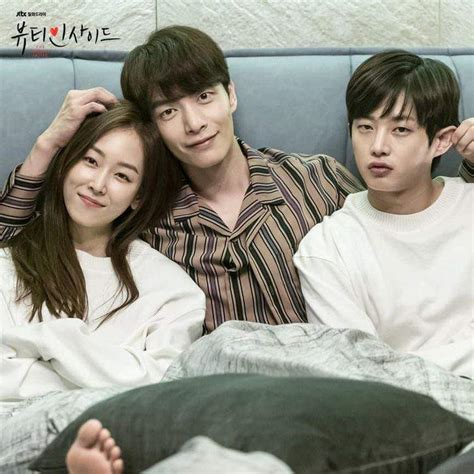
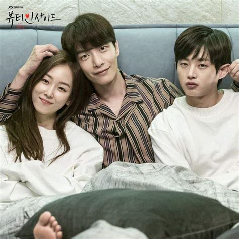

Sell Your Haunted House
Hong Ji Ah adalah seorang pengusir setan yang menjalankan Daebak Real Estate. Dia menyingkirkan roh jahat dari real estat dan kemudian menjualnya. Oh In Beom adalah seorang scammer. Dia sering menggunakan hantu dalam skema menghasilkan uangnya. Hong Ji Ah dan Oh In Beom bekerja sama untuk mengungkap rahasia kematian ibu Hong Ji Ah, yang meninggal 20 tahun lalu.
My Roommate is a Gumiho
Drama Korea My Roommate Is A Gumiho mengisahkan seorang mahasiswi yang tak sengaja menelan manik-manik gumiho tampan (rubah berekor sembilan). Keduanya harus tinggal bersama hingga menemukan solusi untuk masalah mereka. Shin Woo Yeo (pemain Jang Ki Yong) adalah gumiho berumur 999 tahun yang berprofesi sebagai profesor. Ia mengumpulkan energi manusia dalam manik-manik agar dapat berubah menjadi manusia. Sementara, Lee Dam (pemain Hyeri) adalah mahasiswi berumur 22 tahun yang belum pernah berpacaran. Ia tak sengaja menelan manik-manik Shin Woo Yeo yang dapat mengancam nyawanya.
Suspicious Partner
Seorang pelupa yang mematikan bisa menjadi hal yang berbahaya. Noh Ji Wook (Ji Chang Wook) adalah seorang jaksa penuntut yang beralih profesi menjadi pengacara swasta di sebuah firma hukum yang kuat. Sementara itu, Eun Bong Hee (Nam Ji Hyun) adalah seorang jaksa penuntut yang bekerja sama dengan jaksa Cha Yoo Jung (Nara), mantan pacar Ji Wook yang sangat ingin kembali bersamanya. Pengacara Ji Eun Hyuk (Choi Tae Joon) adalah teman keluarga lama Ji Wook tapi di antara mereka timbul kebencian tentang keadaan keluarga mereka yang berbeda.
The Beauty Inside
Drama ini adalah remake dari film 2015 “The Beauty Inside” dengan unsur-unsur utama tertentu dari kisah aslinya yang berubah. Ini tentang kisah cinta Han Se Kye (Seo Hyun Jin), seorang aktris A-list yang harus menghabiskan satu minggu dari setiap bulan yang tinggal di tubuh orang lain. Sementara itu, Seo Do Jae (Lee Min Ki) adalah seorang pria yang menderita prosopagnosia yang menderita ketidakmampuan untuk mengenali wajah.